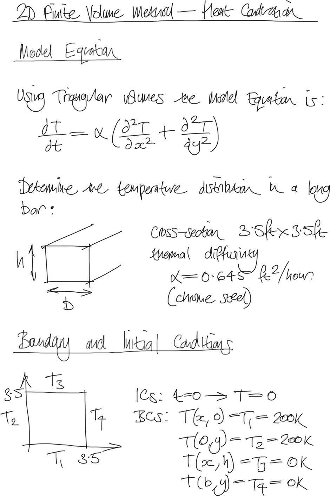
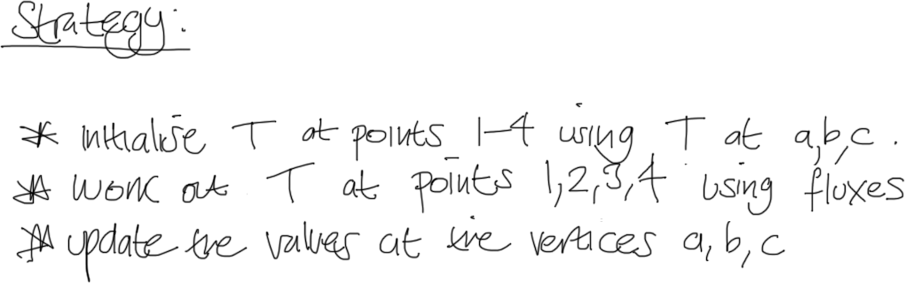
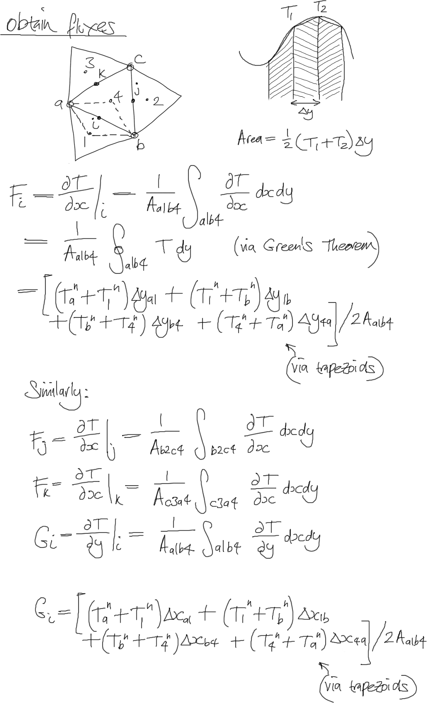
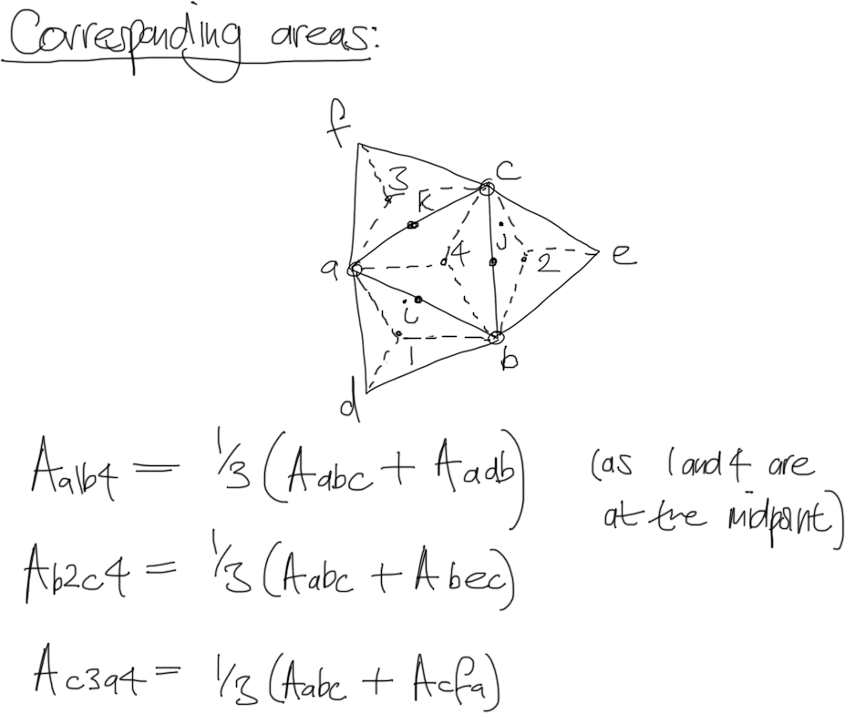
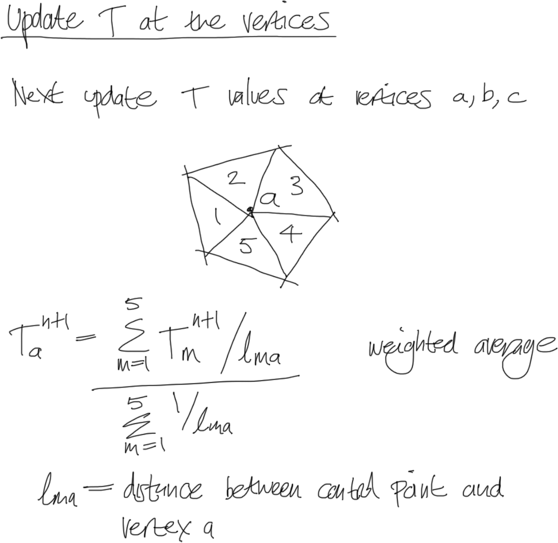
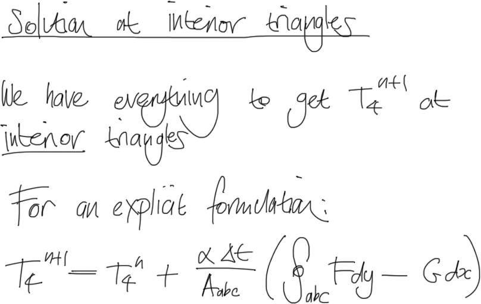
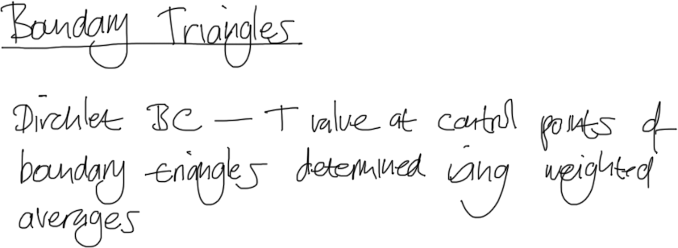
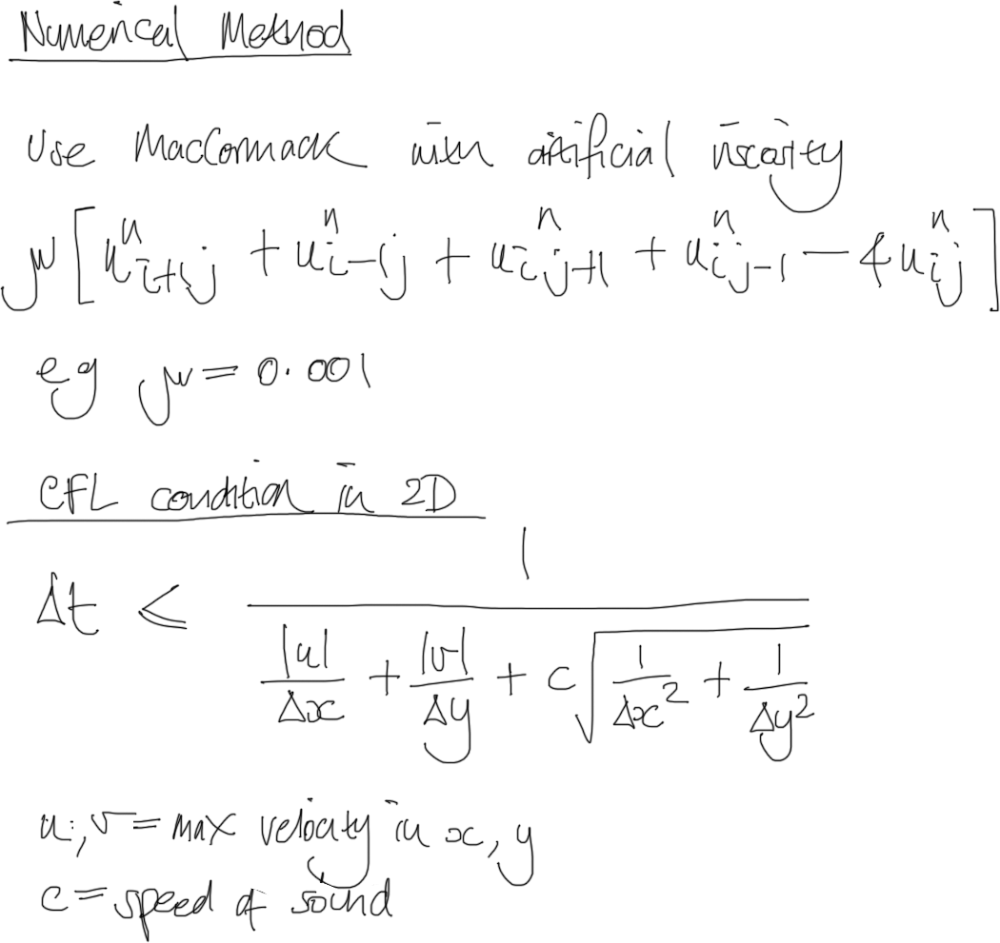
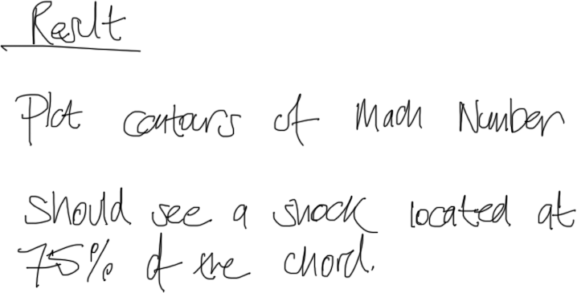

The Visual Room
1.2.3.1. Finite Difference and Finite Volume Projects
«
1.2.1.8. 2D Second-order Non-Linear Convection-Diffusion
::
Contents
::
2. HPSC MOOC
»
1.2.3.1. Finite Difference and Finite Volume Projects
¶
Sod’s Test Problems
2D Heat Transfer using the Finite Volume Method
Model Equation, Initial Conditions and Boundary Conditions
Grid Generation
Integration wrt Interior Triangles
Strategy
Temporal Term
Laplacian Term
Obtain Fluxes
Corresponding Areas
Update T at the Vertices
Solution at Interior Triangles
Boundary Triangles
Advance in Time
Result
GAMM Channel
Introduction
Boundary and Initial Conditions
Numerical Method and CFL Condition
Result
1.2.3.1.1. Sod’s Test Problems
¶
1.2.3.1.2. 2D Heat Transfer using the Finite Volume Method
¶
1.2.3.1.2.1. Model Equation, Initial Conditions and Boundary Conditions
¶

1.2.3.1.2.2. Grid Generation
¶
1.2.3.1.2.3. Integration wrt Interior Triangles
¶
1.2.3.1.2.4. Strategy
¶

1.2.3.1.2.5. Temporal Term
¶
1.2.3.1.2.6. Laplacian Term
¶
1.2.3.1.2.7. Obtain Fluxes
¶

1.2.3.1.2.8. Corresponding Areas
¶

1.2.3.1.2.9. Update T at the Vertices
¶

1.2.3.1.2.10. Solution at Interior Triangles
¶

1.2.3.1.2.11. Boundary Triangles
¶

1.2.3.1.2.12. Advance in Time
¶
1.2.3.1.2.13. Result
¶
1.2.3.1.3. GAMM Channel
¶
1.2.3.1.3.1. Introduction
¶
1.2.3.1.3.2. Boundary and Initial Conditions
¶
1.2.3.1.3.3. Numerical Method and CFL Condition
¶

1.2.3.1.3.4. Result
¶

«
1.2.1.8. 2D Second-order Non-Linear Convection-Diffusion
::
Contents
::
2. HPSC MOOC
»


{kind=link}
{kind=link}
{kind=link}
{kind=link}
{kind=link}
{kind=link}
{kind=link}
{kind=link}
{kind=link}